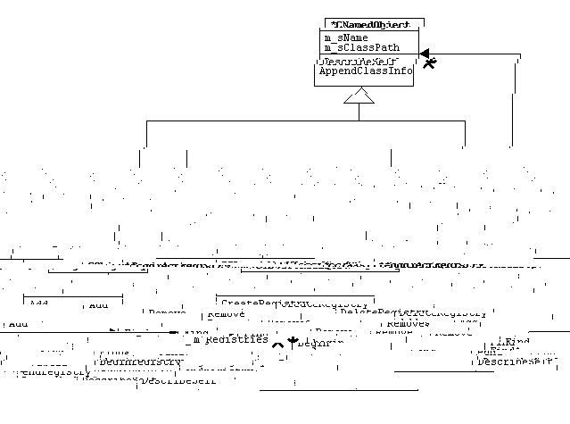

SuperClasses: *CNamedObject
One to One associations:
One to Many associations:
Aggregate classes (1:1) :
Aggregate classes (1:*) :
Visibility: public
Parameters: CNamedObject& rObject
Return Type: void
Classification: Mutator
Registers its parameter in the registry. If the name is already present in the map, CDuplicateNameException is thrown.
Visibility: public
Parameters: const string& rName
Return Type: void
Classification: Mutator
Removes an object from the registry. This version locates an object by name and removes it from the registry. If the object does not exist the CNoSuchObject exception is thrown.
Visibility: public
Parameters: const CNamedObj& rObject
Return Type: void
Classification: Mutator
Removes an object from the registry. This version locates an object by a reference tot he object and removes it from the registry. If the object does not exist the CNoSuchObject exception is thrown.
Visibility: public
Parameters: const string& rObjectName
Return Type: const ObjectRegistryIterator
Classification: Selector
Locates the object described by the input string. If there is no such object then CNoSuchObject is thrown. Note that a const iterator is returned. To get a non-const iterator, clients will need to use the STL find algorithm, with begin and end iterators produced by this class.
Visibility: public
Parameters:
Return Type: ObjectIterator
Classification: Selector/indirect mutator
Returns an iterator which 'points' to the first object in the
registry. Traversing the registry through this iterator will
visit all objects in name alphabetical order.
ObjectIterator is a typedef for:
map
Visibility: public
Parameters:
Return Type: ObjectIterator
Classification: Selector.
Returns an iterator which 'points' off the end of the m_Registrants map. Provided to allow clients to know when to terminate iteration through the objects.
Visibility: public
Parameters:
Return Type: string
Classification: Selector
Returns a string which describes the registry.
The string is of the form:
CNamedObject::DescribSelf()
Objects in the registry:
SuperClasses: *CNamedObject
One to One associations:
One to Many associations:
Aggregate classes (1:1) :
Aggregate classes (1:*) :
Visibility: public
Parameters: const string& RegistryName
Return Type: void
Classification: Mutator
Creates a new registry. It is not an error to create a registry which already exists. If this is attempted, it is a no-op.
Visibility: public
Parameters: const string& RegistryName
Return Type: void
Classification: Mutator
Delete an existing registry. Any registry entries are destroyed, however the objects they point to are not. Attempts to destroy an nonexsitent registry result in a NoSuchObject exception.
Visibility: public
Parameters: const string& RegistryName, CNamedObject& rObject
Return Type: void
Classification: base class mutator.
Adds an item to a registry. If the item already exists in that registry, a DuplicateName exception is thrown. If the registry does not exist a NoSuchObject exception is thrown.
Visibility: public
Parameters: const string& RegistryName, CNamedObject& Object
Return Type: void
Classification: base class mutator
The named object is removed from the designated registry. If the object does not exist, or the registry does not exist, a NoSuchObject exception is thrown. The name embedded in the exception differentiates between these two cases.
Visibility: public
Parameters: const string& RegistryName, const string& ObjectName
Return Type: ObjectRegistryIterator
Classification: Selector
Locates an object in a specific registry. If the registry or object don't exist a NoSuchObject exception is thrown.
Visibility: public
Parameters: const string& ObjectName
Return Type: CRefcountedPtr
Classification: Sellector
Returns a referece counted pointer to
a dynamically allocated list of Objects which
match the name requested.
ObjectList is a typedef for:
list
Visibility: public
Parameters:
Return Type: RegistryIterator
Classification: Selector
Returns an iterator into the registries which
are contained by this object. Note that iteratiing
will return registries... that is RegistryIterator is a
typedef for:
map
Visibility: public
Parameters:
Return Type: RegistryIterator
Classification: Selector
Returns a registry iterator suitable for determining when iteration has been completed (e.g. while(p != coreg.endregistry()) {... p++; }
Visibility: public
Parameters:
Return Type: string
Classification: Selector
Descirbes self. This produces a string of the form:
CNamedObject::DescibeSelf()
" Registries defined: " List of registries
" Registry "
SuperClasses:
One to One associations:
One to Many associations:
Aggregate classes (1:1) :
Aggregate classes (1:*) :
Visibility: private
Type: string
The name of this object, as assigned at creation time.
Visibility: private
Type: string
Class derivation as determined by at construction time by recursing the typeinfo tree.
Visibility: public
Parameters:
Return Type: string
Classification: Selector
Returns a string decribing what is known about the object. In this case, the string is of the form:
>>>>>>>>>>>>>>>>>>><<<<<<<<<<<<<<<<<<<
Object of type m_sClassPath named m_sName
Visibility: protected
Parameters:
Return Type: void
Classification: Construction helper
Called down through the construction chain to build up the m_sClassPath string.
Last Updated: Tuesday, August 07, 2001 Ron Fox